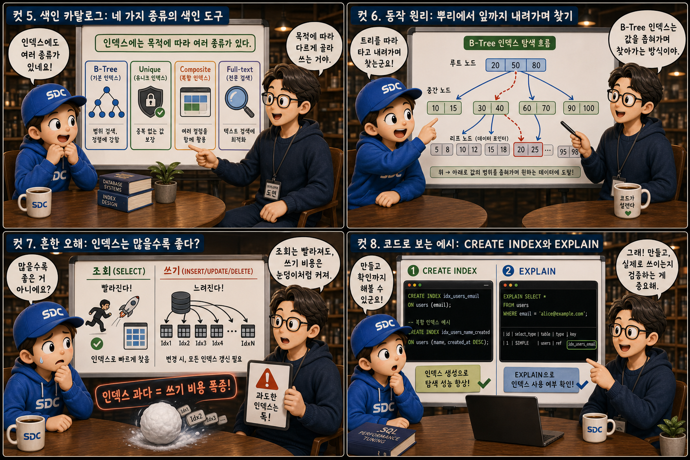
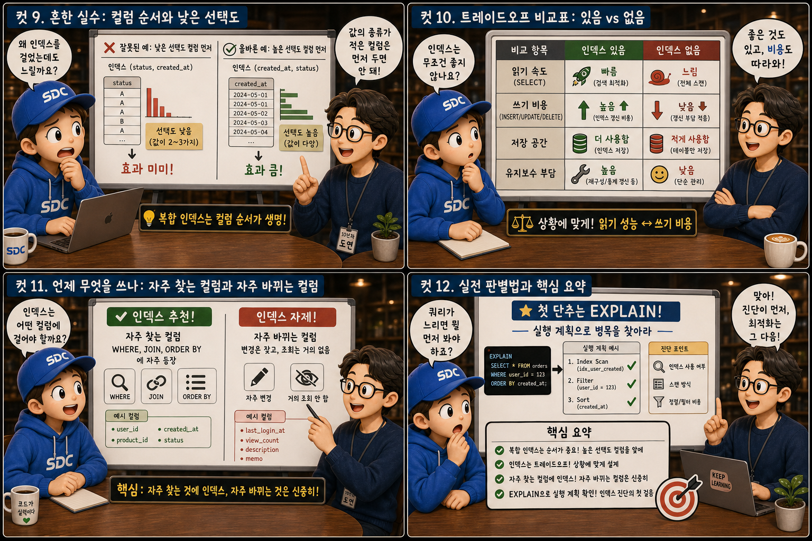

두꺼운 백과사전의 ‘색인을 짚어 바로 펼치기’와 ‘처음부터 한 장씩 넘기기’에 비유해 인덱스를 12컷으로 풀어봅니다.
Index LookupvsFull Scan
웹 서비스의 테이블에는 수백만, 수천만 행이 쌓입니다. 이 중 원하는 한 줄을 매번 처음부터 훑는다면 서비스는 금세 느려집니다. 두꺼운 백과사전에서 단어 하나를 찾을 때 색인을 짚어 바로 펼치는 손과 1페이지부터 한 장씩 넘기는 손의 차이 — 데이터베이스 인덱스는 바로 그 차이를 만드는 자료구조입니다. 이 글에서는 인덱스가 무엇이고 왜, 어떻게 빠른지, 그리고 어떤 대가를 치르는지를 백과사전의 색인에 비유해 하나씩 살펴봅니다.
PART 1 / 3 — 색인의 발견 (컷 01–04)
fourcut-01 — 컷 01 ~ 04
컷 01
이 많은 페이지에서 어떻게 순식간에 찾을까
수백만 건의 데이터 속에서 원하는 한 줄을 찾는 일은, 두꺼운 백과사전에서 단어 하나를 찾는 일과 같다.
가죽 장정의 두꺼운 백과사전이 펼쳐져 있고, 손가락 하나가 책 뒤쪽 색인 페이지의 한 단어를 짚고 있습니다. 그 단어에서 골드빛 실선이 뻗어나가 본문의 정확한 페이지로 곧장 이어집니다. 그림자 속에는 처음부터 한 장씩 넘기는 손이 흐릿하게 대비되어 있습니다. 목차와 색인이 있느냐 없느냐 — 그것이 수백만 행 중 원하는 데이터를 0.01초 만에 찾느냐, 한참을 기다리느냐를 가릅니다.
컷 02
정의: 테이블과 별도로 관리되는 정렬된 지도
인덱스는 테이블 본문과는 별개로 유지되는, 특정 컬럼 값을 미리 정렬해둔 참조용 자료구조다.
인덱스는 테이블 안에 있는 것이 아니라 테이블과 별도로 유지되는 자료구조입니다. 특정 컬럼의 값을 미리 정렬해두고, 각 값이 실제 어느 행에 있는지 위치 정보를 함께 저장합니다. 두꺼운 본문 페이지 더미(테이블) 옆에 알파벳순 탭이 달린 얇은 색인 카드 묶음(인덱스)이 놓여 있고, 카드마다 본문의 위치를 가리키는 화살표가 그려진 모습을 떠올리면 됩니다. 인덱스를 훑으면 정렬된 순서대로 원하는 값을 빠르게 찾은 뒤, 그 위치 정보로 실제 행을 곧바로 찾아갈 수 있습니다. index != table
컷 03
나란히 비교: 처음부터 넘기기 vs 색인으로 바로 펼치기
Full Table Scan은 모든 행을 처음부터 하나씩 확인하고, Index Lookup은 색인을 통해 원하는 위치로 곧장 이동한다.
인덱스가 없는 컬럼으로 조회하면 데이터베이스는 테이블의 처음부터 끝까지 모든 행을 확인하는 Full Table Scan을 수행합니다. 행이 수백 개일 땐 문제가 없지만 수백만 개가 되면 조회 시간이 급격히 늘어납니다. 반면 해당 컬럼에 인덱스가 있으면 정렬된 색인 구조를 따라 원하는 값을 빠르게 찾고, 그 위치로 바로 이동해 데이터를 가져오는 Index Lookup이 일어납니다. 같은 책을 1페이지부터 한 장 한 장 넘기는 손과, 색인을 짚은 뒤 곧바로 목표 페이지를 펼치는 손 — 같은 책, 다른 방법입니다.
컷 04
핵심 문장: 읽기는 빨라지고 쓰기는 무거워진다
인덱스는 공짜가 아니다. 읽기 속도를 얻는 대신 쓰기 비용과 저장 공간이라는 대가를 치른다.
READ — 빠른 읽기
정렬된 색인 덕분에 조회가 빨라진다
WRITE — 느린 쓰기
쓸 때마다 색인도 함께 갱신해야 한다
principle — 인덱스는 읽기를 빠르게 하는 대신 쓰기 비용을 늘리는 트레이드오프다
데이터를 INSERT, UPDATE, DELETE할 때마다 테이블뿐 아니라 그 컬럼에 걸린 모든 인덱스도 함께 갱신되어야 하므로 쓰기 작업이 느려지고 디스크 공간도 추가로 사용됩니다. 저울의 한쪽 접시에는 ‘빠른 읽기’라 적힌 골드 깃털이, 반대쪽에는 ‘느린 쓰기’라 적힌 벽돌이 놓여 있습니다. 이 균형을 이해하는 것이 인덱스 설계의 출발점입니다.
PART 2 / 3 — 종류와 동작 원리 (컷 05–08)

fourcut-02 — 컷 05 ~ 08
컷 05
색인 카탈로그: 네 가지 종류의 색인 도구
인덱스에는 목적에 따라 여러 종류가 있다. B-Tree, Unique, Composite(복합), Full-text가 대표적이다.
도서관 분류 서랍처럼 네 칸의 카탈로그를 떠올려 보세요. 가장 널리 쓰이는 것은 B-Tree 인덱스로, 정렬과 범위 검색에 두루 강한 범용 기본형입니다. Unique 인덱스는 특정 컬럼 값이 테이블 전체에서 중복되지 않도록 강제하면서 동시에 조회도 빠르게 합니다. Composite(복합) 인덱스는 두 개 이상의 컬럼을 하나의 인덱스로 묶어 여러 조건이 함께 쓰이는 조회를 최적화하며, Full-text 인덱스는 긴 문장 안에서 특정 단어를 찾는 검색에 특화되어 있습니다. 목적에 맞는 색인을 고르는 것이 시작입니다.
컷 06
동작 원리: 뿌리에서 잎까지 내려가며 찾기
B-Tree 인덱스는 트리 구조를 위에서 아래로 타고 내려가며 값을 좁혀가는 방식으로 원하는 데이터를 찾는다.
검색 시작→루트 노드→중간 노드→리프 노드→행 위치 참조→실제 데이터 행
B-Tree 인덱스는 값을 정렬된 트리 구조로 저장합니다. 검색은 트리의 꼭대기인 루트 노드에서 시작해 찾는 값의 범위에 맞는 가지를 골라 한 단계씩 아래로 내려가며, 마지막에 도달하는 리프 노드가 실제 데이터의 위치를 가리킵니다. 백과사전의 챕터–절–항목 위계를 따라 손가락으로 짚어 내려가는 것과 같지요. 이 방식 덕분에 수백만 행이 있어도 트리의 높이는 몇 단계에 불과해, 극히 적은 비교만으로 원하는 값을 찾아낼 수 있습니다.
컷 07
흔한 오해: 인덱스는 많을수록 좋다?
모든 컬럼에 인덱스를 걸면 조회는 빨라 보이지만, 데이터가 바뀔 때마다 모든 인덱스를 함께 갱신해야 하므로 쓰기 비용이 눈덩이처럼 커진다.
⚠ 쓰기 한 번에 색인 갱신 여러 번
인덱스를 많이 만들수록 조회는 다양한 조건에서 빨라질 수 있지만, 그 대가로 행 하나를 추가하거나 수정할 때마다 관련된 모든 인덱스가 함께 갱신되어야 합니다. 인덱스가 열 개면 쓰기 한 번에 최대 열 번의 추가 갱신 작업이 발생할 수 있는 셈입니다.
✓ 자주 조회되는 컬럼에만 선별적으로
실제로 자주 조회에 사용되는 컬럼에만 선별적으로 인덱스를 만드는 것이 좋습니다. 색인은 골라 쌓는 것이지, 겹겹이 쌓아 올리는 것이 아닙니다.
책에 새 문장 한 줄을 적는 순간, 옆에 다섯 겹 여섯 겹으로 쌓인 색인 카드 탑 전체에서 동시에 ‘갱신 중’ 도장이 찍히는 장면을 상상해 보세요. 위태롭게 기울어진 색인 탑은 쓰기 성능을 짓누르는 무게 그 자체입니다.
컷 08
코드로 보는 예시: CREATE INDEX와 EXPLAIN
인덱스는 CREATE INDEX 구문으로 만들고, EXPLAIN으로 쿼리가 실제로 그 인덱스를 사용하는지 확인할 수 있다.
색인 만들기 — CREATE INDEX
-- email 컬럼에 색인을 단다CREATE INDEX idx_users_email
ON users (email);
사용 여부 확인 — EXPLAIN
-- 실행 계획으로 검증한다EXPLAINSELECT * FROM users
WHERE email = 'a@b.com';
-- => Using index ✓
인덱스는 CREATE INDEX 인덱스이름 ON 테이블명 (컬럼명); 구문으로 생성합니다. 하지만 만들었다고 끝이 아닙니다. EXPLAIN 명령으로 실제 쿼리 실행 계획을 확인해 데이터베이스가 그 인덱스를 사용하는지 검증해야 합니다. 실행 계획에 Full Table Scan이 여전히 나온다면 인덱스가 있어도 활용되지 않고 있다는 뜻이므로 원인을 다시 점검해야 합니다. 만들었으면 반드시 확인한다 — 이것이 규칙입니다.
PART 3 / 3 — 실전 감각과 요약 (컷 09–12)

fourcut-03 — 컷 09 ~ 12
컷 09
흔한 실수: 컬럼 순서와 낮은 선택도
복합 인덱스는 컬럼을 나열하는 순서가 중요하며, 값의 종류가 몇 가지뿐인 컬럼에 인덱스를 걸어도 큰 효과가 없다.
복합 인덱스는 컬럼을 나열한 순서 그대로 정렬되므로, 쿼리에서 자주 함께 쓰이는 조건의 순서와 맞아야 제 성능을 냅니다. 성 → 이름 → 생일 순으로 정렬된 색인 카드를 생일 → 이름 → 성 순으로 뒤바꿔 놓으면 원하는 검색에 맞지 않는 것과 같습니다. 또한 성별이나 상태값처럼 값의 종류가 몇 가지 되지 않는, 즉 카디널리티(선택도)가 낮은 컬럼은 색인을 짚어도 결과가 책 절반 분량으로 쏟아져 나와 별다른 이득이 없습니다. 반면 이메일처럼 카디널리티가 높은 컬럼은 짚자마자 단 한 페이지로 좁혀집니다. 인덱스는 조건을 걸었을 때 소수의 행으로 확실히 좁혀지는 컬럼에 걸어야 효과적입니다.
컷 10
트레이드오프 비교표: 있음 vs 없음
읽기 속도, 쓰기 비용, 저장 공간, 유지보수 부담 네 축으로 비교하면 트레이드오프가 한눈에 드러난다.
same table, different cost
비교 축
인덱스 있음
인덱스 없음
읽기 속도
빠름 (나는 새 깃털)
느림 (기어가는 달팽이)
쓰기 비용
무거움 (벽돌) — 색인도 함께 갱신
가벼움 (깃털)
저장 공간
본문 + 색인 카드 더미 추가
본문 페이지만
유지보수 부담
관리 도구 필요 (렌치)
거의 없음 (빈 손)
인덱스가 있으면 읽기 속도는 크게 개선되지만 쓰기 비용, 저장 공간, 유지보수 부담이 함께 늘어납니다. 반대로 인덱스가 없으면 쓰기는 가볍고 저장 공간도 절약되지만 조회가 느려집니다. 어느 쪽이 정답이라기보다, 해당 컬럼이 얼마나 자주 조회되고 얼마나 자주 변경되는지에 따라 선택이 달라지는 균형의 문제입니다.
컷 11
언제 무엇을 쓰나: 자주 찾는 컬럼과 자주 바뀌는 컬럼
WHERE, JOIN, ORDER BY에 자주 등장하는 컬럼에는 인덱스를 걸고, 자주 바뀌면서 거의 조회되지 않는 컬럼에는 인덱스를 자제한다.
📖 손때 묻은 색인 카드 → 인덱스 추천
WHERE절 조건으로 자주 쓰이는 컬럼
JOIN 연결 키로 쓰이는 컬럼
ORDER BY 정렬 기준 컬럼
📝 매일 덧칠되는 메모지 → 인덱스 자제
쓰기가 압도적으로 많은 로그성 컬럼
거의 조회되지 않는 컬럼
카디널리티가 낮은 컬럼
실무에서는 WHERE절 조건, JOIN 연결 키, ORDER BY 정렬 기준으로 자주 쓰이는 컬럼에 인덱스를 거는 것이 기본 원칙입니다. 반대로 로그성 데이터처럼 쓰기가 압도적으로 많고 조회는 거의 하지 않는 컬럼에 인덱스를 걸면 쓰기 성능만 갉아먹고 얻는 이득이 거의 없습니다. 결국 좋은 인덱스 설계는 실제 쿼리 패턴 — 조회 빈도 대 변경 빈도 — 를 관찰하는 데서 시작됩니다.
컷 12
실전 판별법과 핵심 요약: 느리면 EXPLAIN부터
쿼리가 느리다면 가장 먼저 EXPLAIN으로 실행 계획을 확인하라. 이것이 인덱스 문제를 진단하는 첫 단추다.
쿼리가 느리다고 느껴질 때 가장 먼저 할 일은 EXPLAIN으로 실행 계획을 확인해 실제로 인덱스가 사용되고 있는지 보는 것입니다. 인덱스는 테이블과 별도로 관리되는 정렬된 참조 구조로, 읽기를 빠르게 하는 대신 쓰기 비용과 저장 공간이라는 대가를 요구합니다. 자주 조회되는 컬럼에 알맞은 종류와 순서로 인덱스를 설계하는 것 — 그것이 대용량 데이터에서도 0.01초 만에 원하는 행을 찾아내는 비결입니다.